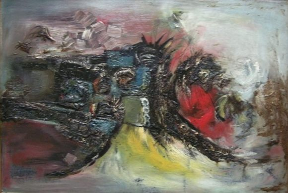

Han Kuan Cheng
fl.1960s – 1970s
Artist Biography
Han Kuan Cheng was a Singaporean artist who painted in both abstract and semi-realist styles. He took part in a mixed paintings exhibition with the Singapore Academy of Arts at Victoria Memorial Hall in May 1963 and then joined and exhibited at the Modern Art Society in 1965. Cheng worked at Radio Television Singapura with Eng Siak Loy, who went on to become the most famous stamp designer in Singapore, whilst Cheng was commissioned to design a number of important stamps, notably those celebrating Singapore’s 150th anniversary in 1969 and landmark buildings in1973.

Composition